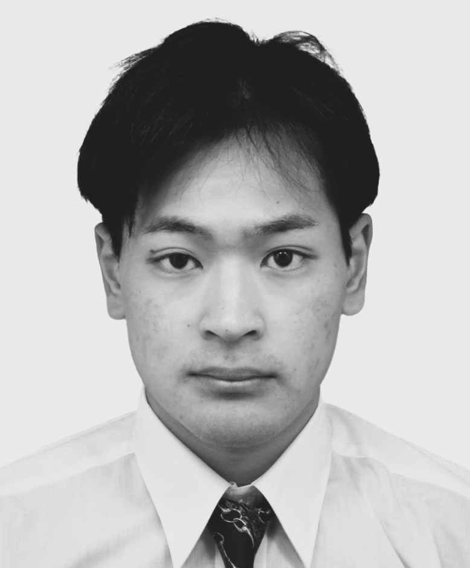

Profile
プロフィール
Ryoma Sonoyama received the B.E. degree in Mechano-Informatics and the M.S. degree in Information Science and Technology from the University of Tokyo, Tokyo, Japan, in 2023 and 2025, respectively, where he is currently pursuing the Ph.D. degree in Information Science and Technology as a member of the Information Somatics Lab (Inami & Monnai Lab), RCAST. Since 2025, he has been supported by the JST SPRING GX program. From January to February 2026, he was a Guest Researcher at the Mobile Radio Systems Group, Institute for Communications Technology, Technische Universität Braunschweig, Germany.
His research interest is augmenting human abilities through technology. Since 2023, he has focused on terahertz technologies, exploring how terahertz waves can support people through wireless communication and sensing. This interest is rooted in his love of sports and of anything that pushes both mind and body.